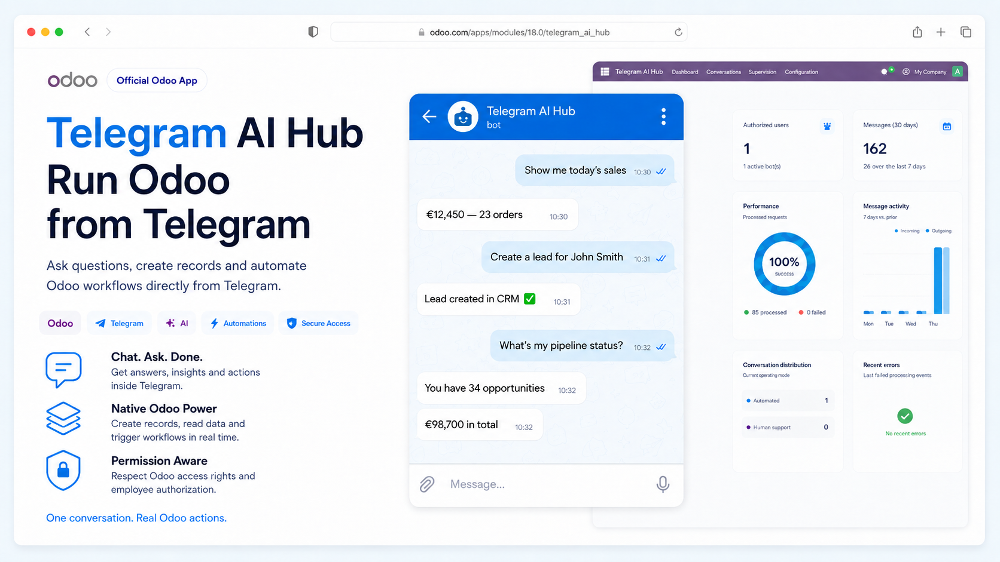
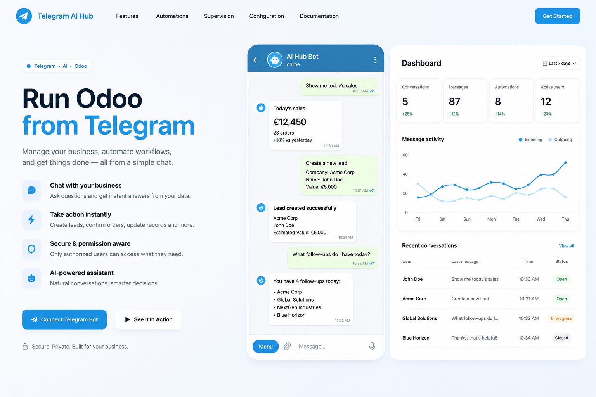
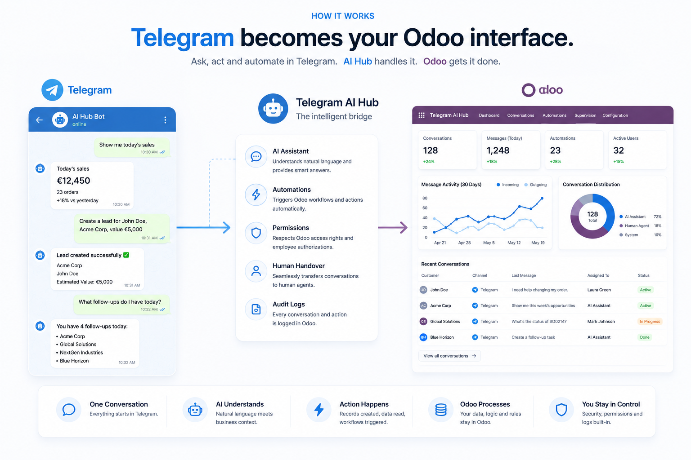
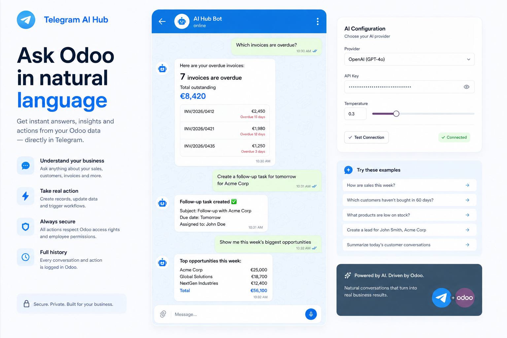
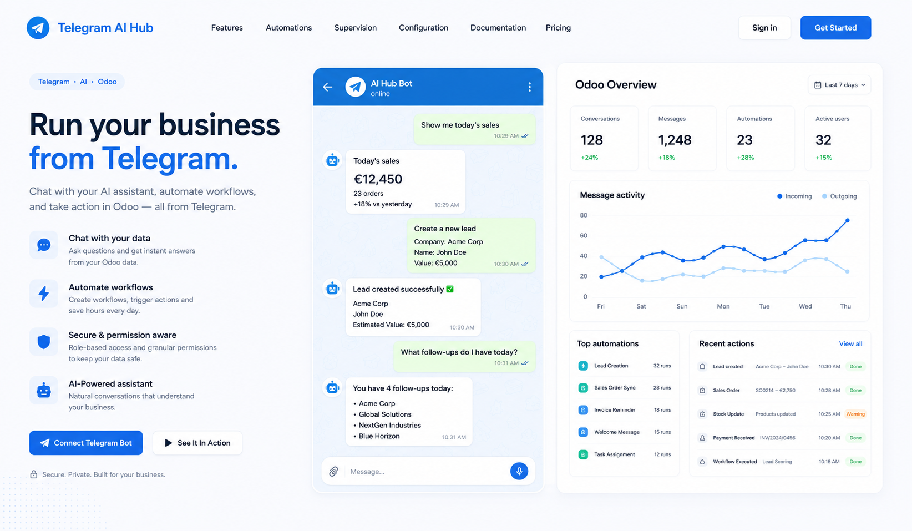
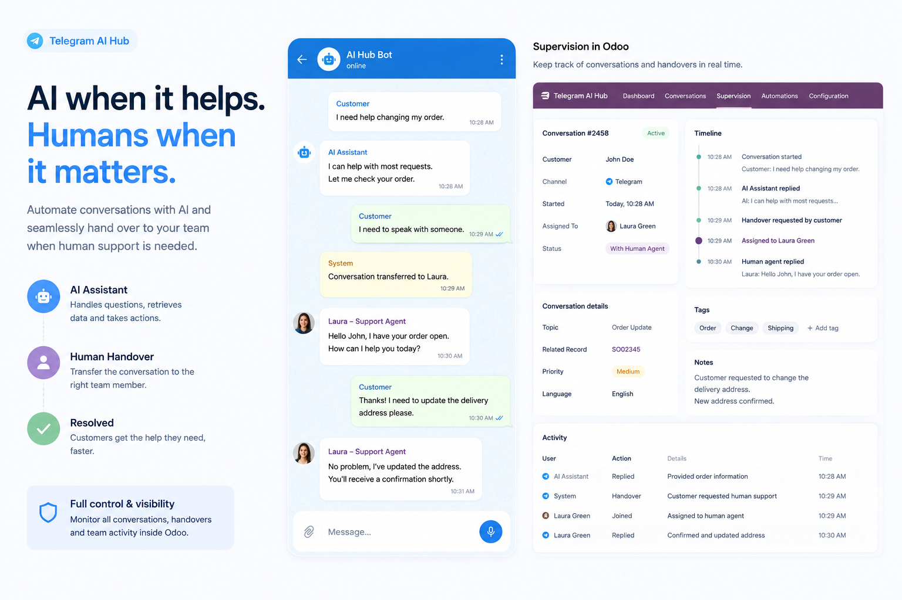
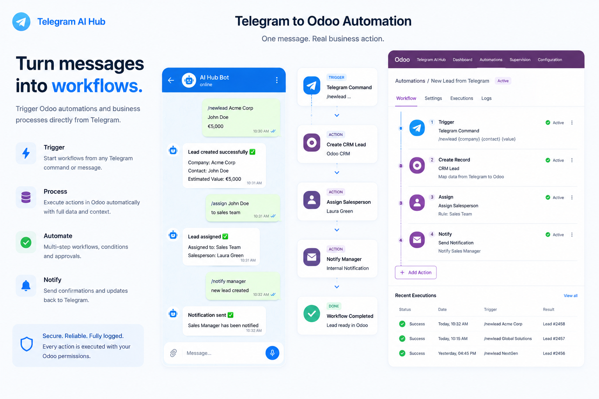
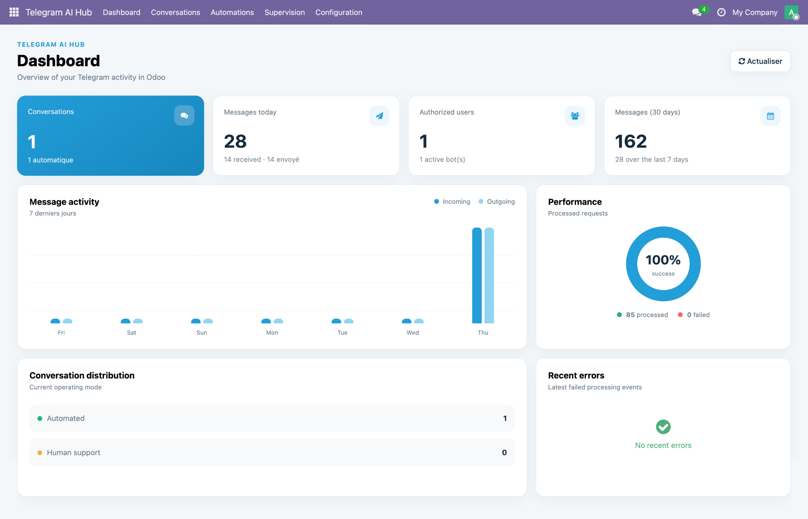
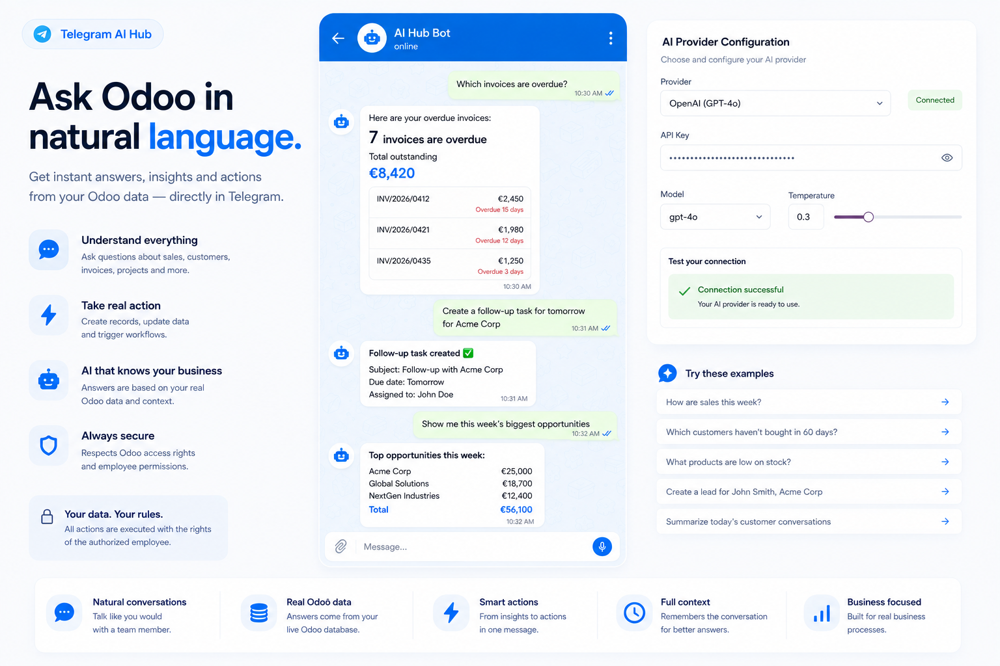
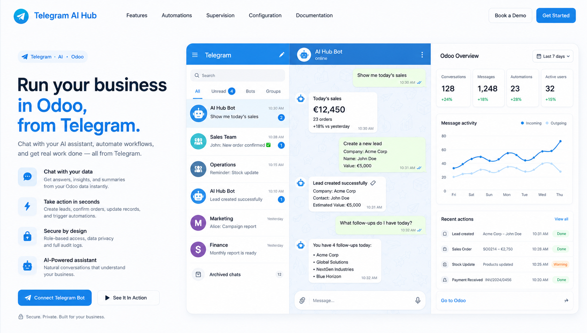

See the chatbot working with real Odoo data.
Our English demonstration uses a real Telegram conversation connected to Odoo and only dedicated demonstration records.

Ask questions, create approved records, trigger controlled workflows and keep your team connected to Odoo — directly from a Telegram conversation.

Actions remain connected to your Odoo business data, rules and users.
Ask operational questions in a simple Telegram conversation.
Create approved contacts and CRM records through controlled tools.
Every Telegram identity is linked to an authorized internal Odoo user.
Telegram becomes a fast operational interface for everyday Odoo work — without replacing Odoo itself.
Retrieve CRM, sales, invoice, stock or operational information using natural language.
Create contacts and CRM opportunities using secure, approved Odoo actions.
Turn commands, keywords and messages into repeatable business workflows.
Keep conversations, employees, handovers and activity visible inside Odoo.

AI Hub sits between the conversation and Odoo, applying intelligence, automation and access controls before an action reaches your business system.

Illustrative workflow view. Actual data and available tools depend on installed Odoo applications and employee permissions.
Our English demonstration uses a real Telegram conversation connected to Odoo and only dedicated demonstration records.
Move from a business question to useful information — and from information to an approved action — without navigating through multiple menus.

The visual contains illustrative examples; the module executes only its documented allow-listed tools.

Automate routine requests, then transfer a conversation to an Odoo operator whenever human intervention is needed.

Commands, keywords, messages and buttons can start ordered steps with conditions, templates, approved Odoo actions and AI processing.

Employee authorization, Odoo access controls, conversation history and controlled actions remain visible and auditable.
Match a permanent Telegram identity.
Link the Odoo user and select permissions.
Run controlled, documented business tools.
Review conversations, messages and errors.
Monitor incoming and outgoing messages, authorized users, conversation modes, performance and recent errors.

A guided configuration flow makes deployment understandable for administrators.
Use the official BotFather and securely copy the generated token.
Validate the token and install the public HTTPS webhook.
Link Telegram numeric IDs to approved internal Odoo users.
Send a message, ask a question or run the first approved action.

Configure the API key, endpoint, response model, transcription model, timeout and system instructions directly in Odoo.

Illustrative provider view. Available fields and supported endpoints are documented in the module.

One conversation moves directly from a request to a controlled Odoo action.
Requires Odoo Community or Enterprise on Odoo.sh or an on-premise server with a public HTTPS URL, a customer-controlled Telegram bot and a customer-supplied OpenAI API key. Telegram and AI-provider terms, privacy policies and usage charges are separate. Odoo Online does not support custom server modules.
We accompany customers through module installation, BotFather setup, webhook installation, AI-provider configuration, first-user authorization and initial business tests.
WhatsApp: +212 781 488 538
Email: contact@kone-adama.com
Watch Live Demo DocumentationScan for a guided demo
Odoo 11–19 editions available · Community & Enterprise · Odoo.sh & On-Premise
Developed and supported by ResilientByte Maroc